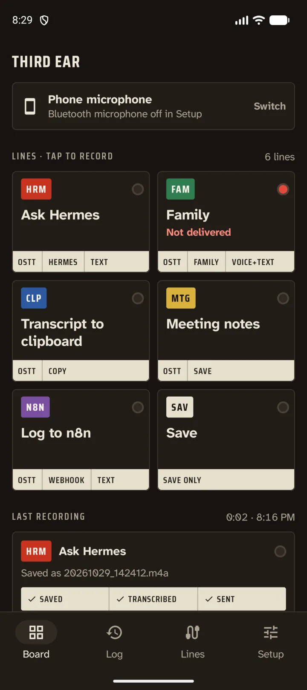
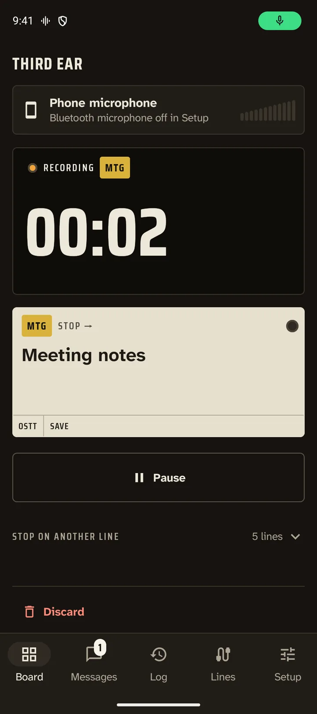
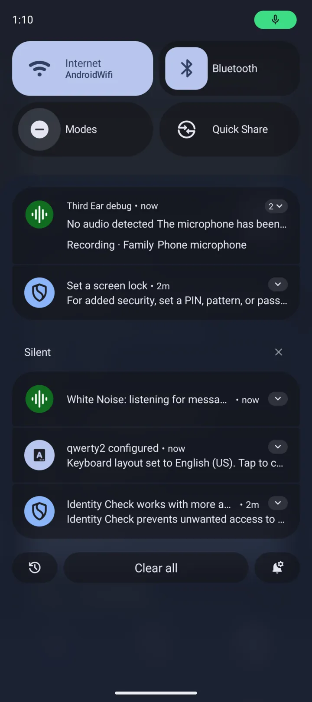
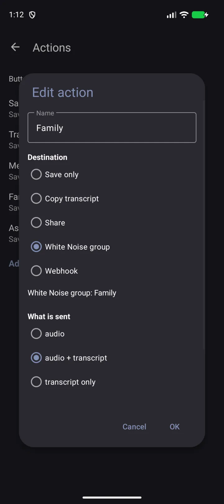
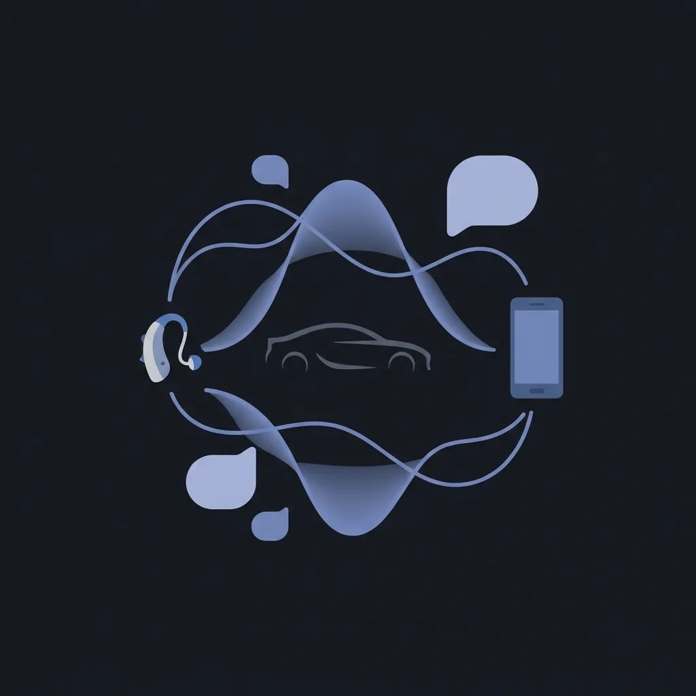
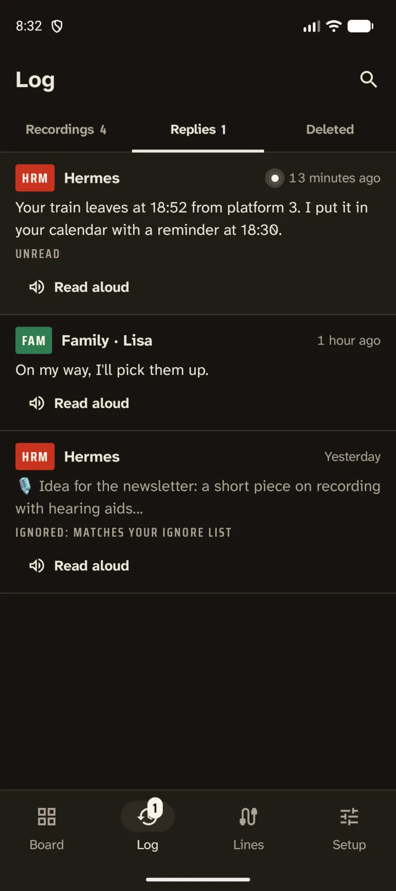
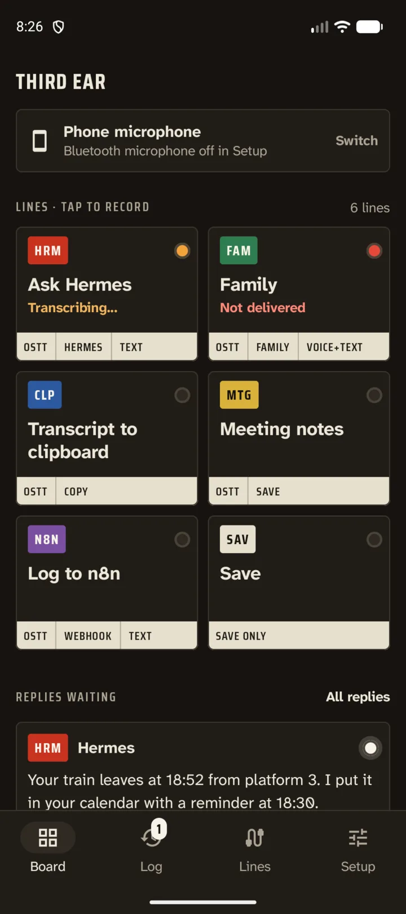

Diktafón pre kozmický vek
Najmodernejší diktafón pre Android a tretie ucho na všetko, čo by si inak zabudol zapísať. Nahráva z telefónu, Bluetooth slúchadiel, načúvacích aparátov s LE Audio aj z auta. Prepis vznikne v telefóne a výsledok pôjde tam, kam hovorí tlačidlo, na ktoré si ťukol. Názov je slovná hra s tretím okom, ale prácu robí ucho.
- Zadarmo
- Otvorený kód (GPLv3)
- Bez účtu a analytiky
- Android 12+

Tlačidlo pre každý cieľ, ako v malom riadiacom stredisku
Väčšina diktafónov má jedno tlačidlo nahrávania a veľa nádeje. Third Ear má tlačidlá, ktoré si nadefinuješ sám: názov a to, čo sa stane potom.
- iba uložiť nahrávku
- skopírovať prepis do schránky
- zdieľať súbor alebo text
- poslať zvuk, prepis alebo oboje do skupiny vo White Noise
- poslať na webhook (n8n, Home Assistant, vlastný server)
Ťukni na tlačidlo a nahrávanie sa začne. Počas nahrávania sa každé tlačidlo zmení na „Stop → názov“ a napíše, čo urobí, takže cieľ môžeš ešte zmeniť v okamihu zastavenia. Potom notifikácia ukazuje každý krok (ukladanie, prepis, čakanie na aplikáciu na prepis, odosielanie) a na želanie ho aj povie nahlas, napríklad „Uložené, prepisujem.“
Každá linka na Paneli má vlastnú farbu šnúry, krátky kód a kontrolku, takže stav všetkého prečítaš jedným pohľadom:
- oranžová: prepisuje sa alebo odosiela
- biela: zo skupiny tejto linky čaká odpoveď
- červená: nedoručené; nahrávka je uložená a Skúsiť znova je na jedno ťuknutie



Bluetooth mikrofóny, ktoré sa naozaj ozvú
Android pustí Bluetooth mikrofón len k aplikáciám, ktoré sa správajú ako telefonát, a Third Ear sa tak správa. Smerovanie zvuku vybaví za teba, takže môžeš nahrávať zo slúchadiel, z načúvacích aparátov s LE Audio aj z handsfree mikrofónu v aute.
- Počká, kým sa LE Audio rozbehne („Čakám na Bluetooth mikrofón…“, zvyčajne 1,7 až 3,5 s).
- Keď mikrofón naozaj dodáva zvuk, povie nahlas, že môžeš hovoriť.
- Tlačidlo zdroja na obrazovke nahrávania ukáže, ktorý mikrofón práve nahráva.
- Ak sa Bluetooth mikrofón nerozbehne alebo sa odpojí, Third Ear sa raz prepne na mikrofón telefónu a ozve sa zvukový signál.
- Mikrofón môžeš prepnúť aj uprostred nahrávania. Pokračuje sa v tom istom súbore.
Overené na Pixeli s načúvacími aparátmi s LE Audio.

Najlepšie funguje s Offline Speech to Text
Third Ear nemá vlastný rozpoznávač reči. Hotový súbor odovzdá aplikácii Offline Speech to Text (OSTT), čo je bezplatná aplikácia, ktorá prepisuje v zariadení, offline. OSTT je taký mozog za ušami. Beží to na pozadí a zamknutá obrazovka nevadí.
- Ak je OSTT práve zaneprázdnená (napríklad diktuje jej klávesnica), Third Ear počká a skúša to znova asi 10 minút.
- Prepisy sa ukladajú ako súbory .txt vedľa nahrávky a môžeš ich kopírovať.
Získať Offline Speech to Text na Zapstore
Zápisky zo schôdzok a diktovanie
Vyrob si akciu „Meeting notes“: nahráš, dostaneš prepis. Alebo použi „Prepis do schránky“ a diktuj do ľubovoľnej aplikácie: nahraj, ťukni, vlož. Prepisy sú obyčajné textové súbory vedľa zvuku, takže sa v nich dá hľadať.
Hlasové správy vo White Noise a odpovede späť
White Noise je end-to-end šifrovaný messenger postavený na nostr (Marmot/MLS). Third Ear tam má vlastnú identitu, ukázanú ako npub s QR kódom. Pozvi ho do skupiny, prijmi pozvánku a akcia pošle tvoju hlasovú správu s prepisom ako popisom, alebo iba text.
Odpovede sa vracajú. Pre každú skupinu si vyberieš: vypnuté, prehrávať hlasové správy, alebo prehrávať hlas a text čítať nahlas hlasovou syntézou. Deje sa to automaticky alebo na požiadanie cez „Prečítať nahlas“ v notifikácii. Zoznam ignorovaných (predvolene 🎙️) preskočí správy, ktoré nechceš čítať. Zoznam posledných správ má tlačidlá Prehrať a Prečítať. Kľúč si zazálohuješ exportom a importom nsec.
Rozprávaj sa s AI agentom bez rúk
Daj Third Ear a agenta, napríklad Hermes agent, do jednej skupiny. Hermes je AI agent, s ktorým sa dá rozprávať v skupinách White Noise cez konektor MDK. Ty hovoríš, agent dostane prepis (alebo zvuk) a jeho odpoveď ti prečíta alebo prehrá, so slúchadlami či načúvacími aparátmi a bez pohľadu na displej. Ozvenu tvojho prepisu od agenta preskočí položka 🎙️ v zozname ignorovaných.
Agenti za konektorom MDK musia povoliť npub aplikácie Third Ear (--allow-welcomer alebo --allow-user).


V aute s Android Auto
- Na obrazovke auta nájdeš mriežku svojich akcií.
- Nahrávanie cez mikrofón auta a obrazovka „Stop → akcia“.
- Prichádzajúce správy z White Noise sa v aute objavia ako notifikácie s tlačidlami Odpovedať a Označiť ako prečítané. Android Auto ich prečíta, keď o to požiadaš, nikdy sám od seba.
Ako zapnúť Third Ear v Android Auto
Third Ear nie je z Play Store, preto ho Android Auto skryje, kým nepovolíš neznáme zdroje. Povolenie na štart trvá asi minútu:
- V telefóne otvor nastavenia Android Auto (v Nastaveniach vyhľadaj „Android Auto“).
- Zroluj úplne dole a asi desaťkrát ťukni na Verzia, potom povoľ nastavenia pre vývojárov.
- Ťukni na ⋮ vpravo hore → Nastavenia pre vývojárov → zapni Neznáme zdroje.
- Späť v nastaveniach Android Auto otvor Prispôsobiť spúšťač a zaškrtni Third Ear.
- V nastaveniach Third Ear zapni Používať Bluetooth mikrofón, aby nahrával mikrofónom auta.
- Pripoj sa k autu. Ak sa Third Ear neukáže, vynúť zastavenie Android Auto a pripoj sa znova.
Stavané na dlhé nahrávky, aj s vypnutou obrazovkou
- Nahráva ďalej s vypnutou obrazovkou a zamknutým telefónom, kým ju nezastavíš.
- Odolné voči pádu: ak systém aplikáciu zabije, nahraté sa pri ďalšom spustení obnoví a uloží. Stratí sa najviac posledná sekunda.
- Strážca ticha ťa upozorní, keď mikrofón dodáva digitálne ticho, napríklad pre vypnutý spínač mikrofónu alebo preto, že ho drží iná aplikácia.
- Formáty: AAC (.m4a), Opus (.ogg) a MP3.
Po ruke všade
Tri dlaždice rýchlych nastavení, každá viazaná na jednu z tvojich akcií, a miniaplikácia na domovskej obrazovke. Obrazovky Third Ear sú v angličtine, slovenčine, češtine, nemčine a španielčine.
Zadarmo, s otvoreným kódom a súkromne
Third Ear je slobodný softvér pod licenciou GPLv3. Nepotrebuje účet a nemá analytiku. Prepis sa robí v tvojom telefóne, nie na nejakom serveri na obežnej dráhe.
Je to fork aplikácie Fossify Voice Recorder, ktorý vytvoril Juraj Bednár.
Získať Third Ear
Pripravený na štart? Third Ear stiahneš zo Zapstore alebo ako APK z vydania na GitHube. Vyžaduje Android 12 alebo novší.
Stiahnuť zo Zapstore Stiahnuť APK Zdroj na GitHube
Najprv si nainštaluj Offline Speech to Text, ten robí prepis.